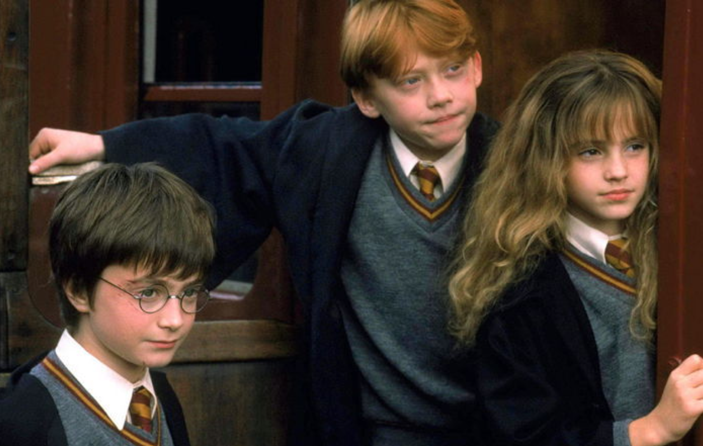

영웅의 여정
영웅의 여정
조지프 캠벨의 영웅의 여정
크리스토퍼 보글러의 영웅의 여정

영웅의 여정 12단계가 잘 드러나는 영화 <해리포터>
크리스토퍼 보글러가 재구성한 영웅의 여정 12단계
일상세계
모험에의 소명
소명의 거부
정신적 스승과의 만남
첫 관문의 통과
시험, 협력자, 적대자
동굴 가장 깊은 곳으로의 접근
시련
보상 (검을 손에 쥠)
귀한의 길
부활
영약을 가지고 귀환